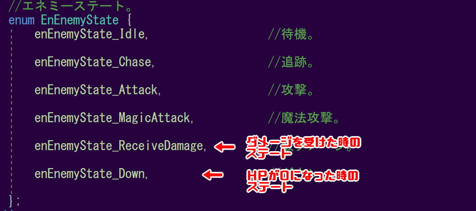
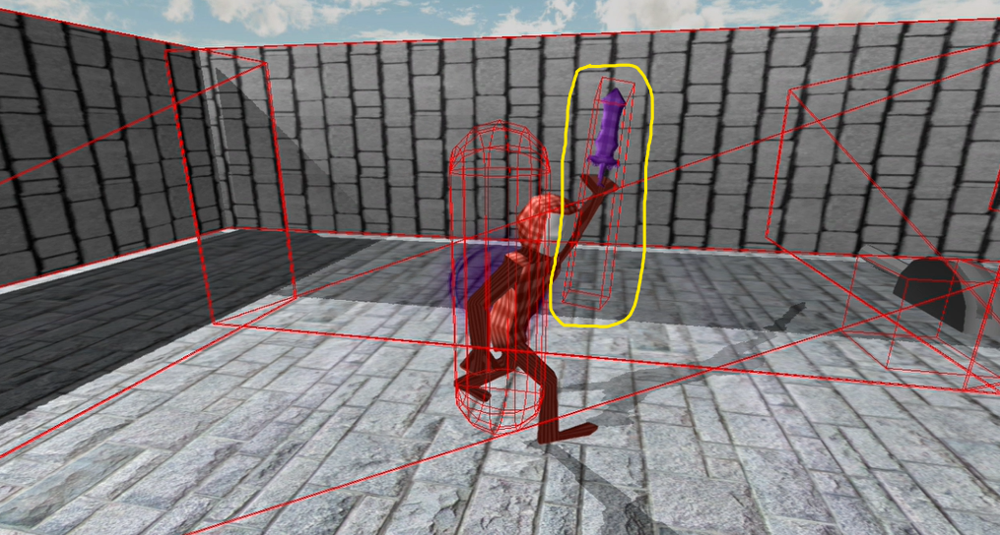
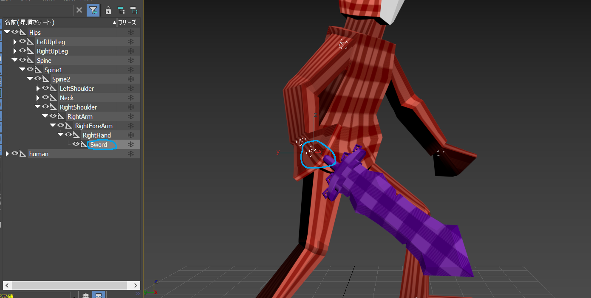

5.1 エネミー側の当たり判定
Action_03では、プレイヤー側の攻撃判定を実装しました。次に、「エネミー」側の当たり判定を実装しましょう。
いつものごとく、Game.slnからVisual Studioを立ち上げてください。
では、Enemy.cppに下記のコードを追加してください。
#include "stdafx.h"
#include "Enemy.h"
#include "Game.h"
#include "FireBall.h"
#include "Player.h"
#include "sound/SoundEngine.h"
#include "sound/SoundSource.h"
#include <time.h>
#include <stdlib.h>
//CollisionObjectを使用したいため、ファイルをインクルードする。
#include "collision/CollisionObject.h"
Enemy::Enemy()
{
}
.
.
.
void Enemy::Collision()
{
//プレイヤーの攻撃用のコリジョンを取得する。
const auto& collisions = g_collisionObjectManager->FindCollisionObjects("player_attack");
//コリジョンの配列をfor文で回す。
for(auto collision : collisions)
{
//コリジョンとキャラコンが衝突したら。
if(collision->IsHit(m_charaCon))
{
//HPを1減らす。
m_hp -= 1;
//効果音を再生する。
SoundSource* se = NewGO<SoundSource>(0);
se->Init(4);
se->Play(false);
se->SetVolume(0.4f);
return;
}
}
}
5.2 エネミーのステート遷移
Action_02で、このゲームのオブジェクトの挙動は、「ステート」によって管理されているといいました。
「Enemy」には、以下のような「ステート」が存在します。

攻撃をした際に「エネミー」が何の反応も示さなかったのは、「ステート」を遷移させてなかったからでした。
それでは、「エネミー」に「ステート」を遷移させる処理を追加しましょう。
Enemy.cpp
void Enemy::Collision()
{
//プレイヤーの攻撃用のコリジョンを取得する。
const auto& collisions = g_collisionObjectManager->FindCollisionObjects("player_attack");
//コリジョンの配列をfor文で回す。
for(auto collision : collisions)
{
//コリジョンとキャラコンが衝突したら。
if(collision->IsHit(m_charaCon))
{
//HPを1減らす。
m_hp -= 1;
//HPが0より上なら。
if(m_hp > 0)
{
//被ダメージステートに遷移する。
m_enemyState = enEnemyState_ReceiveDamage;
}
//HPが0なら。
else if(m_hp == 0)
{
//ダウンステートに遷移する。
m_enemyState = enEnemyState_Down;
}
//効果音を再生する。
SoundSource* se = NewGO<SoundSource>(0);
se->Init(4);
se->Play(false);
se->SetVolume(0.4f);
return;
}
}
}
Enemy.cpp
void Enemy::Collision()
{
//被ダメージ、あるいはダウンステートの時には。
//当たり判定処理をしない。
if(m_enemyState == enEnemyState_ReceiveDamage ||
m_enemyState == enEnemyState_Down)
{
reteurn;
}
//プレイヤーの攻撃用のコリジョンを取得する。
const auto& collisions = g_collisionObjectManager->FindCollisionObjects("player_attack");
.
.
.
}
5.3 ボーンを利用した当たり判定
今回、通常攻撃の当たり判定は球体の当たり判定であり、かなり大雑把になっています。
しかし、「ダークソウル」などのアクションゲームでは、プレイヤーの所持している「剣」などの形にそって当たり判定が作成されています。

攻撃の当たり判定をこのように、「剣」の形に実装してみましょう。
それでは、Player.cppのMakeAttackCollisionを下記のように修正してください。
Player.cpp
void Player::MakeAttackCollision()
{
//コリジョンオブジェクトを作成する。
auto collisionObject = NewGO<CollisionObject>(0);
Vector3 collisionPosition = m_position;
//座標をプレイヤーの少し前に設定する。
collisionPosition += m_forward * 50.0f;
//ボックス状のコリジョンを作成する。
collisionObject->CreateBox(collisionPosition, //座標。
Quaternion::Identity, //回転。
Vector3(110.0f, 15.0f, 15.0f) //大きさ。
);
collisionObject->SetName("player_attack");
}
3ds Maxを開いて、Assets/modelData/humanのhuman_attack.fbxを読み込んでください。
humanには様々なボーンが設定されていますが、「Sword」というボーンが存在しています。

この「Sword」というボーンが、プレイヤーの「剣」ポリゴンを動かしています。このボーンを使用すれば上手くいくような気がしませんか？
それでは、まずPlayer.hに下記のコードを追加してください。
Player.h
class Player : public IGameObject
{
public:
.
.
.
int m_hp = 10;
Game* m_game = nullptr;
int m_swordBoneId = -1; //「Sword」ボーンのID。
};
次に、Player.cppのStart関数に下記のコードを追加してください。
Player.cpp
bool Player::Start()
{
.
.
.
m_game = FindGO<Game>("game");
//「Sword」ボーンのID(番号)を取得する。
m_swordBoneId = m_modelRender.FindBoneID(L"Sword");
return true;
}
上記のコードは「Sword」ボーンのID(番号)を取得しています。IDを取得する事により、「Sword」ボーンの情報を持ってくることが可能になります。
それでは、この「m_swordBoneId」を使用して、当たり判定を実装していきましょう。
Player.cppのMakeAttackCollision関数を以下のように修正してください。
Player.cpp
void Player::MakeAttackCollision()
{
.
.
.
collisionObject->SetName("player_attack");
//「Sword」ボーンのワールド行列を取得する。
Matrix matrix = m_modelRender.GetBone(m_swordBoneId)->GetWorldMatrix();
//「Sword」ボーンのワールド行列をコリジョンに適用する。
collisionObject->SetWorldMatrix(matrix);
}
出来たら、F5キーで実行してみましょう。
このように、当たり判定が剣の形に沿うようになっているでしょうか。
行列という言葉が出てきました。これは一体どういうものでしょうか。
行列は座標、大きさ、回転を1つにしたものと思ってください。つまり、「Sword」ボーンの行列には、「Sowrd」ボーンの座標、大きさ、回転の情報が入っているということです。
この行列をCollisionObjectに適用させたということです。